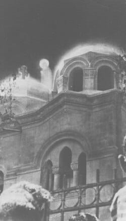
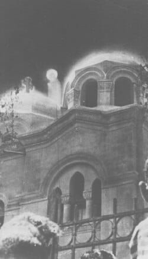

Bunda Maria menampakkan diri kepada tiga anak gembala bernama Lucia Abobora, sepupunya Francisco, dan Jacinta Marto pada tanggal 13 Mei 1917 di padang Cova da Iria. Penampakan ini menyebabkan Bunda Maria mendapat gelar Bunda Maria dari Fatima. Bunda Maria juga berjanji akan menemui mereka pada tanggal 13 di jam yang sama selama enam bulan kedepan, Bunda Maria juga berpesan kepada mereka untuk berdoa rosario setiap hari agar perang usai dan perdamaian dunia dapat terwujud. Pada saat yang sama Bunda Maria memberitahukan kepada mereka bahwa akan ada pencobaan yang datang dari Allah kepada masyarakat Eropa yang pada saat itu sedang berperang.
Pada tahun 1918 bencana waba influenza melanda seluruh Eropa seperti yang di katakan Bunda Maria dan merengut nyawa banyak orang, termasuk Fransisco (10) 14 april 1918 dan Jacinta (9) 20 Februari tahun 1920. Sedangkan Lucia masuk sekolah kesusteran pada usianya yang ke 14 tahun dan menjadi biarawati menyerahkan hidupnya untuk bertekun dalam doa kepada Bunda Maria kemudian meninggal pada 13 Februari 2005 di usianya yang ke 97 tahun.
Pesan Bunda Maria:
Bunda Maria mau mengajak kita untuk rajin berdoa Rosario karena melalui doa Rosario Suci, kita bisa berdoa bersama Bunda Maria untuk merenungkan setiap kisah kehidupan Tuhan kita Yesus dan bertobat serta memperbaiki hidup, tidak hanya itu Bunda Maria juga memberitahukan bahwa Allah selalu menepati janji-Nya kepada setiap orang yang setia mau berdoa dan berusaha.
Bunda Maria menampakkan diri kepada seorang gadis bernama Bernadette Soubirous, yang pada saat itu usia Bernadette 14 tahun. Penampakan itu terjadi sebanyak 18 kali dari tanggal 11 Februari tahun 1858 hingga 16 Juli 1858 di Gua Lourdes Prancis. Bunda Maria juga memerintahkan Bernadette untuk meminum air dan membasuh dirinya di genangan air yang kotor dan memakan rumput di gua itu, Bernadette pun menggali genangan tersebut hingga ia mendapat air yang cukup untuk diminum serta memakan rumput yang di tunjuk oleh Gadis itu, akibat genangan air yang di gali oleh Bernadette itu seorang ibu mendapat kesembuhan pada tangannya yang lumpuh. Pada kunjungan berikutnya Gadis itu menyuruh Bernadette menemui Pastor Peyramale untuk membangun kapel di tempat itu tetapi pastor paroki Lourdes itu tidak langsung mempercayai Bernadette dan juga menanyai nama Gadis itu serta meminta bukti mukjizat. Pada pertemuan selanjutnya Bernadette bertanya nama Gadis itu kemudian Gadis itu menjawab "Aku adalah yang dikandung tanpa noda dosa".
Hingga kini Gua itu menjadi terkenal dengan nama Gua Lourdes. Kemudian pada tanggal 18 Januari 1862, Uskup Tabes, Mgr. Betrand Severt Laurence mengakui mukjizat yang terjadi di gua itu sungguh nyata dan di bangun lah sebuah basiliki untuk memenuhi pesan Bunda Maria.

Sumber: Bonsernews. (2022, 2 November). Gambar st. Bernadette Soubirous
Pesan Bunda Maria:
Bunda Maria berkata kepada Bernadette "Aku tidak menjanjikan kegembiraan di dunia namun kegembiraan di akhirat". Bunda Maria mau mangajak kita untuk mau bertobat secara pribadi untuk keselamatan jiwa, menerima salib kehidupan, dan berbahagia serta Bunda Maria mau kita tidak lupa berdoa kepada Tuhan bagi para pendosa.
Ada beberapa anak yang mengaku telah melihat penampakan yaitu diantaranya ada Fernandes berumur 15 tahun, Gilberte berumur 13 tahun, dan Albert Voisin berumur 11 tahun, anak Hector yaitu seorang pegawai kereta api, dan Marie Louise Perpete Voisin dan Andree berumur 14 tahun dan Gilberte Degeimbre berumur 9 tahun putri seorang janda petani.
Pada 29 November 1932, empat anak melihat sosok Perawan Maria berjalan di atas jembatan kereta api dekat sekolah asrama yang pada saat itu dikelola oleh Sisters Of Christian Doctrine. Awalnya seorang biarawati ragu, tetapi kemudian melihatnya sendiri bersama anak-anak itu, mereka melihat sosok seorang wanita berpakaian putih berjalan satu meter di atas jembatan kereta api di dekatnya. Karena ketakutan, mereka berlari pulang, keesokan harinya pada 30 November 1932 di waktu yang sama penampakan itu pun kembali terjadi lagi.
Pada 1 Desember, anak-anak kembali melihat penampakan Perawan Maria, kali ini ditemani orang tua dan teman-teman mereka. Sang perawan muncul di beberapa lokasi yaitu jembatan, dekat pohon holly di taman biara kemudian di menghilang lagi dan muncul di bawah pohon hawthorn dekat gerbang sekolah, tetapi hanya anak-anak yang dapat melihatnya. kepala biara, Ibu Theophile mencoba menghentikan kejadian itu dengan menutup gerbang taman dan melepaskan anjing.
Pada 2 Desember anak-anak kembali melihat Perawan Maria di balik gerbang taman, sementara anjing-anjing yang sebelumnya dilepaskan justru diam dan berbaring. Albert bertanya apakah ia adalah Yang Dikandung Tanpa Noda Dosa, Maria tersenyum dan mengangguk, saat ditanya apa yang diinginkannya, Maria menjawab, "selalu bersikap baik." Keesokkan harinya, kerumunan 150 orang berkumpul untuk menyaksikan peristiwa itu.
Penampakan terus berlanjut dan menarik banyak orang. Para suster mencabut larangan memasuki taman, dan pada 8 Desember, sekitar 10.000-15.000 orang berkumpul, termasuk dokter dan psikolog yang menguji anak-anak selama penampakan. Anak-anak tetap tidak bereaksi terhadap tes tersebut. Uskup Namur diberi tahu dan meminta kehati-hatian, melarang para pendeta menghadiri peristiwa itu.
Pada 17 Desember, Perawan Maria meminta sebuah kapel. Pada 21 Desember, ia menyebut dirinya "Perawan yang Tak Bernoda" dan pada 23 Desember, ia menyatakan tujuannya agar tempat itu mendjadi lokasi ziarah. Pada 29 Desember, ia mengisyaratkan akhir penampakannya dan menampakan "Hati Emas," yang memberinya julukan Perawan Hati Emas. Pada 30 Desember hingga 1 Januari, ia berulang kali meminta umat untuk berdoa. Pada 2 Januari, di hadapan lebih dari 12.000 orang, ia berjanji akan menyampaikan rahasia kepada anak-anak keesokkan harinya.
Pada 3 Januari 1933, penampakan terakhir terjadi di hadapan 30.000 orang. Perawan Maria memberi pesan rahasia kepada tiga anak bungsu. Kepada Andree, ia menyebut dirinya sebagai Bunda Allah dan Ratu Surga serta meminta untuk selalu berdoa, lalu berpamitan. Kepada Gilberte, ia berjanji akan mempertobatkan orang berdosa. Kepada Fernande, ia meminta pengorbanan sebagai tanda kasih.
Anak-anak menggambarkan Perawan Maria sebagai sosok muda dengan gaun putih panjang, diselimuti tiga sinar biru, ia mengenakan kerudung putih dan mahkota cahaya. Sejak 29 Desember, mereka melihat rosario di lengannya dan Hati emas yang bersinar di dadanya.

Sumber: wikimedia commons. (2007, 24 September). file:Beauraing.JPG
Pesan Bunda Maria:
Pesan dari penampakan Bunda Maria di Beauraing menekankan pentingnya doa, pertobatan, dan pengorbanan. Ia mengundang umat untuk selalu berdoa dengan sungguh-sungguh, mendekatkan diri kepada Tuhan, dan menjalankan hidup dengan kebaikan. selain itu, ia meminta agar tempat itu menjadi tempat ziara dan menunjukkan kasihnya malalui penampakan Hati Emas. pesan utamanya adalah panggilan untuk iman yang lebih mendalam, cinta kepada Yesus dan Maria, serta pertobatan bagi orang berdosa.
Bunda Maria dari Zeitoun pada serangkaian penampakan Maria yang dilaporkan terjadi di Zeitoun, Kairo, Mesir, mulai 2 April 1968 hingga 1971. Penampakan ini dianggap sebagai salah salah satu yang paling terkenal dalam sejarah Kristen, Muslim dan bahkan pejabat pemerintah.
Pada suatu malam, Perawan Maria menampakkan diri kepada Pastor Constantine Moussa di tangga Gereja St. Mary dekat altar kejadian tersebut membuatnya pingsan. Pastor Constantine Moussa merahasiakan pengalaman ini hingga menjelang ajalnya pada tahun 1984. Kepada ketua komite kepausan, ia mengungkapkan bahwa Perawan Maria telah memberi tahu tentang kunjungan yang akan datang dan memintanya untuk bersiap. Tanpa diduga, jutaan orang kemudian datang ke gereja tersebut.
Pada 2 April 1968, dua pekerja Muslim melihat sosok wanita berpakaian putih berlutut di puncak kubah Gereja St. Mary di Zeitoun. Mengira itu seorang biarawati yang hendak bunuh diri, salah satu pekerja, Farouk Mohammed Atwa, mencoba memperingatkan dan memanggil bantuan. Namun, sosok itu berdiri dan tampak bercahaya, mengenakan jubah berkilauan. Seorang wanita berteriak, "Bunda Maria!" dan sekawanan merpati putih bercahaya muncul sebelum semuanya menghilang. keesokan harinya, Farouk, yang seharusnya diamputasi karena gengren dijarinya, mendapati jarinya telah sembuh total menjadi penyembuhan ajaib pertama yang tercatat di Zeitoun.
Seminggu setelah penampakan pertama di Zeitoun, penampakan Bunda Maria terus berulang setiap malam, selalu didahului oleh cahaya misterius yang berkelap-kelip di atas gereja, menyerupai "hujan berlian dari cahaya." Formasi burung merpati bercahaya kemudian muncul, terbang cepat tanpa mengepakkan sayap sebelum menghilang. Setelah itu, ledakan cahaya menyilaukan menyelimuti atap gereja dan membentuk sosok Bunda Maria bercahaya, mengenakan jubah putih panjang dan kerudung cahaya kebiruan. Lingkaran cahaya bersinar di sekeliling kepalanya, dan cahayanya begitu kuat hingga sulit melihat wajahnya. Ia tampak melayang dengan anggun melintasi kubah gereja, membungkuk menyapa kerumunan, dan kadang muncul di antara pohon palem atau dari bola cahaya di kubah gereja.
Kadang-kadang, Bunda Maria muncul dengan bayi Yesus atau bersama St. Joseph dan Yesus remaja. Mahkota cahaya bersinar di atas kepalanya, menambahkan kesan agung. Berita penampakan menyebar luas di Mesir, menarik hingga 250.000 orang setiap malam dari berbagai agama, termasuk Kristen, Yahudi, Muslum, dan bahkan ateis. Mereka berkumpul, berdoa, dan bernyanyi bersama untuk memuji Santa Maria. Ia melambaikan tangan, memberi hormat, dan mengulurkan cabang zaitun, disambut sorak-sorai meriah. Kadang-kadang, asap merah beraroma kemenyan muncul di sekitar penampakan, bahkan mengalir dari jendela kaca gereja yang tertutup.
Pada 13 April, fotografer Wagih Rizk Matta berhasil mengambil foto pertama penampakan Bunda Maria, mengatasi sensasi tidak bergerak yang dialami banyak saksi. Setelahnya, ia menyadari lengannya yang cedera telah sembuh total, yang kemudian dikonfirmasi sebagai kesembuhan ajaib oleh dokter. Penampakan bisa berlangsung dari beberapa menit hingga sembilan jam, seperti yang terjadi pada 4-5 Mei dan 8-9 Juni 1968. Lamanya kejadian memungkinkan orang-orang berlari pulang untuk membawa keluarga dan tetangga mereka. Paus Koptik mengutus Uskup Athanasius untuk menyelidiki secara langsung, dan ia kemudian menyampaikan pengalamannya sendiri.
 

Sumber: Divine Mysteries and Miracles. (2016, 28 AGUSTUS). A clearly recognizable Virgin Mary materializes above the church dan Wikipedia-our Lady of Zeitoun
Pesan yang dapat dipetik:
Dari peristiwa yang menarik perhatian banyak orang dari berbagai kalangan dan agama ini dapat menunjukkan bahwa keyakinan dan doa dapat menyatukan manusia dalam spiritualitas dan harapan. Penampakan ini dianggap sebagai tanda bahwa Tuhan tetap hadir di dunia memberikan pengiburan, pengharapan, dan dorongan bagi umat beriman. Banyak kesaksian tentang penyembuhan ajaib selama peristiwa ini, menunjukkan bahwa iman dan doa dapat membawa keajaiban dalam kehidupan manusia. Kehadiran Bunda Maria sering dikaitkan dengan pesan damai untuk hidup damai dan kasih, mengajak umat manusia untuk hidup dalam harmoni dan memperkuat hubungan mereka dengan Tuhan.Seperti dalam penampakan lainnya, momen ini dapat dilihat sebagai ajakan untuk lebih mendekatkan diri kepada Tuhan melalui doa, pertobatan, dan perbuatan baik.

Sumber: Divine Mysteries and Miracles. (2016, 28 AGUSTUS). Diverse crowds of as many as 250.000 gather to see the apparitions